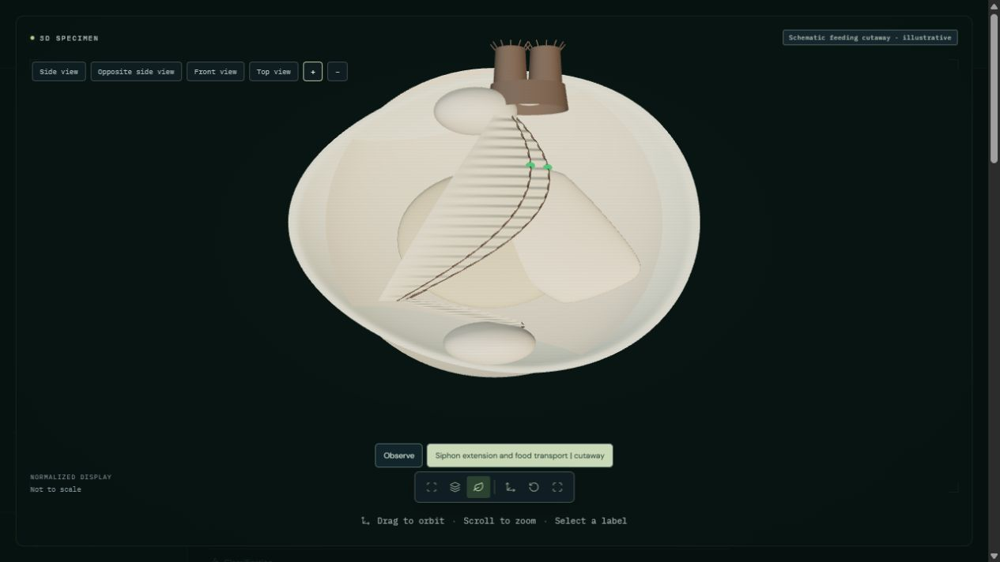
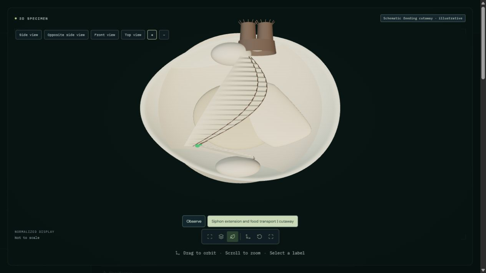
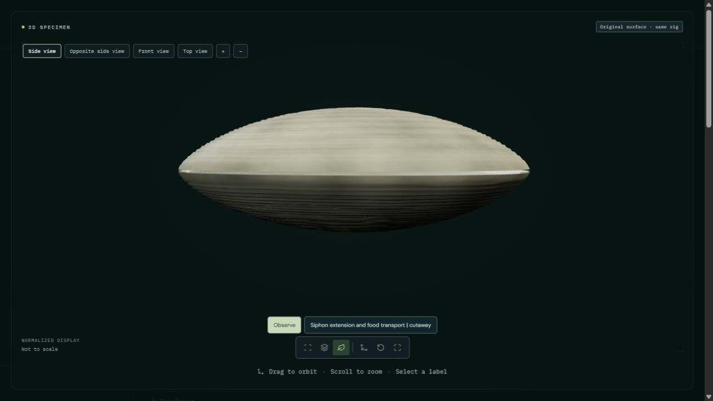

Open hard clam | Moon jelly study
A finite 20-second cutaway extends the short siphons and traces enlarged accepted-food markers from the inhalant opening onto four folded gill sheets, along ventral grooves, across paired labial palps and toward the mouth. The near valve and mantle lobe are omitted and palp sheets separated for inspection. This is an explanatory arrangement, not a natural open-shell posture.
Actual siphon geometry extends and enlarged markers follow prescribed accepted-food paths. Microscopic cilia, mucus properties, nutritional selection, rejection, pumping, clearance, toxic-algae responses, ingestion and digestion are not simulated. Internal tissue dimensions, separation, appearance and timing are authored; no physiological or photorealistic validation.



The green markers are enlarged explanations, not observed particles or a food-selection algorithm. No normal rhythmic gill contraction is inferred from toxic-exposure experiments. The two short siphons have distinct openings, with the inhalant ventral to the exhalant. The source shell geometry, UVs and materials remain unchanged. Tests verify software behavior and preservation, not biological validity.
48 animal processes remain fully unavailable; partial studies retain explicit limitations.